Конгреси · журнал «ДентАрт» 2013 №1 (70)
Засновано Українську академію естетичної стоматології
FOUNDED UKRAINIAN ACADEMY OF ESTHETIC DENTISTRY
Грудень 2012 року в житті стоматологічної спільноти позначений неабиякою подією: у світі стало більше на одну Академію естетичної стоматології — Українську! 13-16 грудня у Полтаві відбувся її I Конгрес «Естетика в стоматології: сьогодення й майбутнє». А зареєстрована УАЕС 1 листопада. Її співзасновники — четверо відомих в Україні і за її межами маестро стоматології: Мирослава Дрогомирецька (Київ), Мирон Угрин (Львів), Сергій Радлінський (Полтава) і Микола Бахуринский (Одеса). Ще 26 провідних стоматологів країни мають статус запрошених кандидатів, доки розробляється положення про членство в академії.

14 грудня 2012 р. в залі Полтавського академічного обласного українського музично-драматичного театру ім. М.В. Гоголя зібралися стоматологи України, гості з Великої Британії, Російської Федерації, Грузії. У вступному слові президент УАЕС Сергій Радлінский нагадав історію руху академій естетичної стоматології, яка веде свій відлік з 1975 року, коли була заснована Американська академія; 1986-й став роком народження Європейської академії естетичної стоматології, а 1994-й — Міжнародної федерації, яка об'єднує національні академії. Плідно працюють академії естетичної стоматології у близькому зарубіжжі — Литовська, Болгарська, Чеська, Польська, представників яких президент УАЕС пообіцяв запросити на ІІ Конгрес. На жаль, припинила свою діяльність Національна академія естетичної стоматології в Росії.
— У всьому світі академії естетичної стоматології розглядають людину як єдине ціле і сповідують міждисциплінарний підхід до лікування пацієнтів. Тому, окрім зібрань і обміну досвідом усередині спеціальностей, потрібна широка міждисциплінарна дискусія про найактуальніші проблеми стоматології. Терапевти, ендодонтисти, імплантологи, пародонтологи, ортодонти і ортопеди — усі ми повинні чути один одного. І майданчик УАЕС, можливо, — чи не єдине місце, де можуть почути один одного фахівці різних напрямів, — сказав Сергій Радлінський.
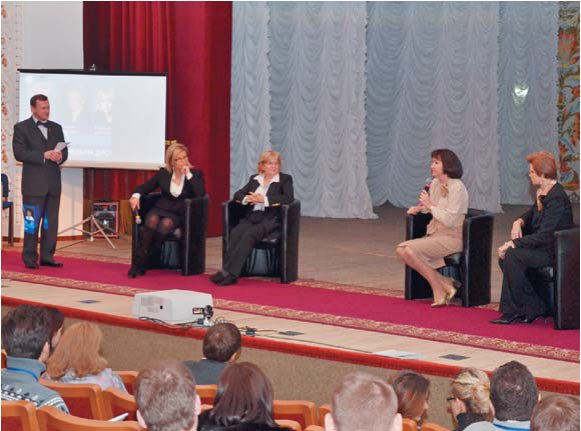
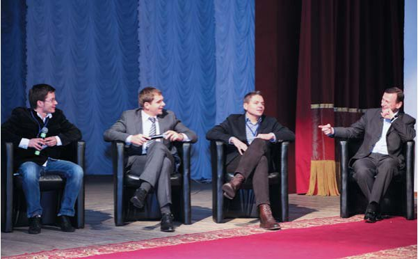
Хід Конгресу яскраво підтвердив ці слова президента. Доповіді українських і зарубіжних стоматологів нікого не залишили байдужими, викликали жваве обговорення і бажання продовжувати професійне спілкування такого високого (чи точніше, глибокого) рівня. Вітаючи учасників зборів, ректор Української медичної стоматологічної академії професор В'ячеслав Ждан висловив надію, що I Конгрес Української академії естетичної стоматології буде знаковим для кожного з присутніх, для стоматологів з різних куточків України, для яких УАЕС може відкрити нові горизонти.
Один із засновників УАЕС, Мирон Угрин, директор Центру стоматологічної імплантації і протезування ММ, віце-президент АСУ, передав учасникам конгресу вітання від почесного члена Європейської академії естетичної стоматології доктора Хорста Вольфганга Хаазе, керівника видавництва «Квінтесенція», і повідомив, що до наступного конгресу УАЕС буде видано перший випуск «Європейського журналу з естетичної стоматології» українською мовою.
У величезній різноманітності тем, підходів, технологій, що їх запропонував конгрес, простежувалася головна думка, та нитка Аріадни, яка виводить лікаря і пацієнта з найскладнішої клінічної ситуації. Скажемо про неї словами співзасновниці академії Мирослави Дрогомирецької, головного ортодонта МОЗ України, доктора медичних наук, професора, завідувачки кафедри ортодонтії Київської національної медичної академії післядипломної освіти ім. П. Л. Шупика, президента Асоціації ортодонтів України:
— Незалежно від того, хто ми за фахом, ми маємо бути стоматологами, виконувати свою головну місію — прищеплювати, виховувати культуру догляду за ротовою порожниною у наших пацієнтів, особливо дітей.
У підсумковому виступі президент УАЕС Сергій Радлінський підкреслив:
— Перший Конгрес академії, який зібрав стоматологів різних спеціальностей, засвідчив, наскільки кожна наша спеціальність є ґрунтовною, глибокою і наскільки важливо об'єднувати зусилля заради здоров'я наших пацієнтів. Ми повинні знати досвід інших, ділитися своїми професійними напрацюваннями, щоб приймати кращі клінічні рішення.
Президент повідомив, що наукові сесії академії відбуватимуться чотири рази на рік у різних містах України.
І на завершення вступної частини звіту про Конгрес — анекдот від Девіда Вінклера: «Чим відрізняється Бог від стоматолога? Бог не думає, що він стоматолог».
На I Конгресі УАЕС мова йшла про естетику, етику і міждисциплінарний підхід у лікуванні пацієнтів
Існують різні форми професійних організацій — товариства і академії. Різниця між цими організаціями в тому, що товариство — це група або асоціація людей, які займаються однією професією, об'єднані спільними інтересами. Академія — це навчальна організація, і її діяльність полягає в навчанні і формуванні філософії професії.
Для учасників I Конгресу УАЕС ще незвичною була лаконічна, обмежена в часі форма доповідей лекторів, але за короткі, на перший погляд, лекції слухачі отримали величезний обсяг інформації, і це надало конгресу динамічності і захопливості. Певною родзинкою, яку неможливо передати на сторінках журналу, були дискусії на сцені з кількома доповідачами, котрі представляли ту чи іншу секцію. Суперечки і в залі, і на сцені були гарячими і цікавими.
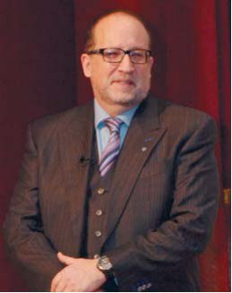
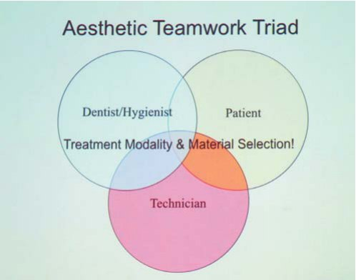
Відкрив лекційну програму конгресу видатний запрошений лектор, якого ми мали честь уперше слухати в Україні, — Девід Вінклер (Велика Британія, Віндзор), президент Міжнародної федерації естетичної стоматології (IFED), яка об'єднує академії з 27 країн. Доктор Вінклер привітав стоматологів України зі створенням Української академії естетичної стоматології і запросив до Міжнародної федерації естетичної стоматології. «Я щасливий, що в Україні сформувалася саме Академія естетичної стоматології, оскільки поява такого об'єднання дасть новий поштовх до розвитку стоматологічного мистецтва у вашій країні», — зазначив пан Вінклер.
Тема його лекції — «Мультидисциплінарний підхід в естетичній стоматології: етика в естетиці» — якнайкраще відображала саму ідею конгресу, задаючи тон подальшому спілкуванню на сцені театру.
Взаємодія різних фахівців у галузі ортодонтії, пародонтології, ендодонтії, реставрації і імплантації — єдино можливий варіант якісного підходу до лікування. Кожен з нас окремо не ідеальний в усіх перерахованих галузях. Існує поняття мульти- та інтердисциплінарних підходів. За аналогією з хокеєм, якщо ми граємо за різні команди і боремося під час матчу — це інтердисциплінарний підхід. Але якщо ми розмовляємо один з одним, обговорюємо шляхи вирішення проблеми — ми граємо за одну команду, і саме це можна назвати мультидисциплінарним підходом.
Ключем до успіху як у житті, так і в стоматології є планування. Якщо ви помилилися у плануванні, то запланували невдачу. Ми маємо справу з біологією, яка не дає 100% гарантій. Ми вчимося на своїх помилках. І тільки знання і досвід допоможуть нам обирати і здійснювати правильні варіанти лікування. Лікування має ґрунтуватися на інформованій згоді пацієнта. 30% усіх народжених у сучасному суспільстві мають шанс дожити до 100 років, але жодна конструкція не може служити упродовж усього життя.
Що первинне у повсякденній практиці стоматолога: прагнення до естетики чи до етики? Естетика початково містить слово етика. Але сьогодні ми часто забуваємо, що стоматолог — це лікар ротової порожнини, а не косметолог, стиліст чи перукар.
Естетика говорить, що зовнішні чинники украй важливі. Етика опонує, що внутрішній зміст важливіший. Естетика намагається усунути якісь моральні навантаження і зобов'язання, оскільки це нудно, тоді як етика — за активний контроль над життям людини, і зобов'язання — наріжний камінь розвитку відповідальності. Етичні принципи прагнуть зробити людину кращою не за допомогою зовнішнього, а за допомогою внутрішнього самовдосконалення. І хоча етика в нашій роботі не завжди в опозиції до естетики, вона завжди має бути вища за естетику.
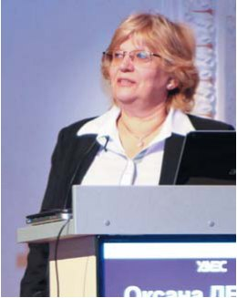
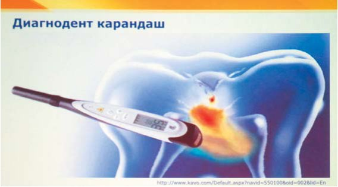
З наступною доповіддю «Природна естетика як результат профілактики» виступила лектор, яка давно пропагує професію гігієніста як одну з найважливіших у стоматології, — Оксана Дєньга (Україна, Одеса), президент Асоціації зубних гігієністів України, доктор медичних наук, професор і завідувачка кафедри стоматології дитячого віку Інституту стоматології НАМН України.
Демінералізація і карієс розвиваються в дуже короткі терміни, і як їх зупинити — залежить тільки від стоматологів. Ми маємо велику кількість місцевих засобів ремінералізуючої терапії, системної ремінералізуючої терапії, знаємо чудові методи, які дозволяють призупинити процес і зробити його оборотним на різних етапах. Під час першого візиту дитини можна оцінити, наскільки агресивний каріозний процес, за допомогою різних методів діагностики. Методи діагностики, якими ми володіємо нині, — і візуально-тактильні, і методи, що дозволяють оцінювати стан твердих тканин зубів за допомогою флуоресценції, Діагнодента, за допомогою оптичної трансілюмінації і спектрокольорометрії, і найпростіший та найдоступніший — рентгенографія. Якими б досконалими не були методи лікування, реставрації, ортопедичні методи, імплантологія... все одно — красивішого, ніж природні тканини і форми зуба, немає нічого! У нас є вибір. Це і препарування каріозних порожнин, і установка вінірів або пластикових коронок у фронтальній ділянці, і металевих — у бічних.
Проте є і альтернативи. Знаючи про метод інфільтрації та ефект проникності твердих тканин зубів, можна отримати максимальний результат! Ґрунтований на капілярному ефекті препарат Айкон дозволяє проводити інфільтрацію початкових уражень. Препарат можна застосовувати при гіпоплазії, тріщинах емалі, після ортодонтичного лікування, відбілювання зубів. Переваги інфільтрації: збереження здорової субстанції і природної форми, продовження повноцінного життя зуба, можливість лікування «без бору і болю», збереження природних контактних пунктів.
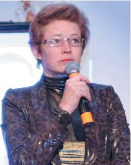
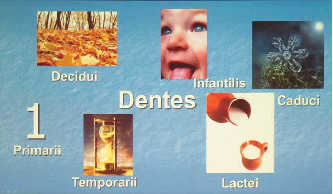
Наталія Біденко (Україна, Київ), доктор медичних наук, доцент кафедри дитячої терапевтичної стоматології і профілактики стоматологічних захворювань Національного медичного університету імені О. О. Богомольця, продовжила тему лікування дітей доповіддю «Естетика тимчасових зубів: фантазія чи реальність?».
Тимчасові зуби — це унікальне явище природи. Можливо, тому латина дала тимчасовим зубам багато назв: «decidui» — листя, що опадає «primarii» — першість, «temporarii» — тимчасовість, «infantilis» — дитинство, «caduci» — швидкоплинність, «lactei» — перша їжа. І мабуть, тому тимчасові зуби були джерелом багатьох міфів і не дуже точних суджень.
Якщо в мистецтві естетика зубів уже посіла своє місце, то естетичні підходи до лікування тимчасових зубів мали довгу і складну еволюцію: від повного ігнорування усіх проблем до повного видалення всього, що турбує. Коронки, неестетичні матеріали (цемент), метод збереження коренів або їх сріблення… Кінець же ХХ століття характеризується появою матеріалів і способів естетичного догляду за тимчасовими зубами. Але це і час появи нового міфу: багато лікарів упевнені, що застосовувати композитні матеріали у тимчасових зубах небажано або не можна. Тим часом дослідження частоти збереження композитних реставрацій залежно від локалізації дефекту вказують на досить високі результати. Умови, яких треба дотримуватися при відновленні тимчасових зубів композитними матеріалами: період стабілізації кореня; переважно хронічний перебіг карієсу; гіпоплазія емалі; депульповані зуби; адекватна поведінка дитини; якісна ізоляція операційного поля; препарування до здорового дентину; сендвіч-техніка або застосування прокладки; можливість застосування самопротравлюючих адгезивних систем; спрощення техніки; щадне очищення зуба; постпломбувальна ремінералізація; відмінна індивідуальна гігієна ротової порожнини; етапність лікування.
Що ж нам заважає в естетичних підходах у дитячій стоматології? Є об'єктивні перешкоди: на ринку нині немає сертифікованих засобів, які могли б полегшити роботу з тимчасовими зубами. Але у нас є ціла низка якісних, прекрасних засобів і матеріалів, які допомагають працювати з дітьми і виконувати естетичну роботу.
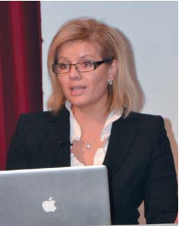
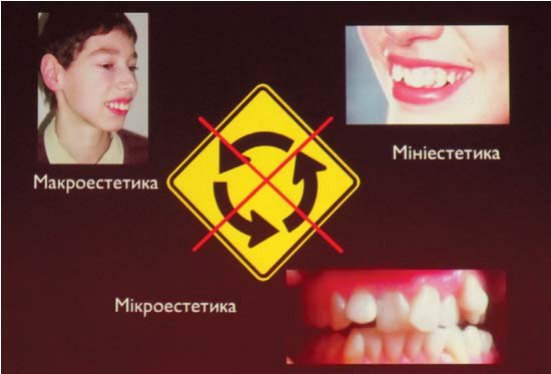
Мирослава Дрогомирецька (Україна, Київ), головний ортодонт МОЗ України, завідувачка кафедри ортодонтії Київської національної медичної академії післядипломної освіти ім. П. Л. Шупика, президент Асоціації ортодонтів України, виступила з доповіддю «Можливості ортодонтії і естетика усмішки».
Основна мета ортодонтичного лікування — це створення ідеальної оклюзії, ідеальна лицьова естетика, і найголовніше — максимальна стабільність результатів лікування. Пацієнти вимагають детальнішого планування лікування з використанням об'єктивних методів діагностики і сучасних технологій для їх організації. Більшість обивателів думає, що ортодонтія — це винятково пластинки або фіксація брекетів... Але це не так! Ортодонтія, будучи медичною спеціальністю, передусім має справу з естетикою, тому вона перебуває на межі мистецтва і науки. Бо саме вона створює певні образи лиця.
Ступінь складності аномалії у людини залежить від того, наскільки вона впливає на неї. Зовнішність людини — це результат форми плюс вплив її особи і характеру. Є дві складові, які визначають лікування: естетика і функція. Тільки лікар повинен в індивідуальному порядку визначити складову здоров'я, тобто порушення функції при патології.
Гармонію створюють макро-, мікро- і мініестетика. Макроестетика: профіль, вертикальні пропорції, повнота губ, серединна лінія лиця, параметри його ширини. Мініестетика: ширина усмішки, симетричність усмішки, лінія усмішки, скупченість, візуалізація різців. Мікроестетика: архітектоніка ясен, колір, розмір і форма зуба. Але окрім цього, на естетику лиця впливають душа або характер людини, емоції.
Можемо також виділити деякі параметри: фронтальні (індекс, кривизна усмішки, її вертикальні і горизонтальні характеристики); сагітальні параметри (сагітальна щілина, нахил різців і оклюзійної площини). Велике значення мають параметри скелетного типу, ротація верхньої щелепи. Ортодонтія може допомогти змінити усі ці параметри естетики. Ортодонти нині часто виступають інженерами твердих і м'яких тканин: ми створюємо кістку для наших коллег-імплантологів, м'які тканини — для ортопедів, формуємо лице і міняємо його профіль не гірше, ніж пластичні хірурги! «Дивовижна здатність краси в тому, що вона відкидає усі межі і змушує нас бачити суть усього людства» (Мей Ролло).
«Ми, ортодонти, — підкреслила Мирослава Дрогомирецька, — справді працюємо, як фабрика краси!»
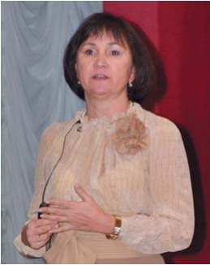
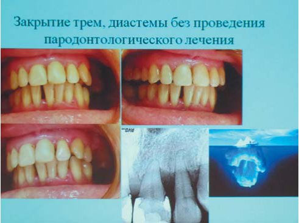
Ірина Мазур (Україна, Київ), доктор медичних наук, професор кафедри стоматології Національної медичної академії післядипломної освіти ім. П. Л. Шупика, завершувала першу частину конгресу доповіддю «Естетика тканин пародонту».
Пародонт — це та частина айсберга, яку не видно. Естетика ясен охоплює колір, форму, консистенцію і контур ясенного краю і його розташування відносно емалево-цементної межі. Основні параметри гармонійної біло-рожевої естетики — це передусім відстань між емалево-цементною межею і гребенем альвеолярного відростка, яка в нормі має складати 2 мм, інтерпроксимальний простір — відстань між вершиною альвеолярного відростка і контактним пунктом — повинен бути не менше 4 мм. Непрямі критерії, що визначають естетику співвідношення зубів і ясен, — це ширина прикріплених і кератинованих ясен, темпи втрати альвеолярного відростка. Якщо в гонитві за естетикою ми забуваємо про тканини пародонту, нехтуючи ортодонтичним лікуванням, то можемо очікувати на серйозну патологію в майбутньому. Рецесія ясен — це результат фенестрації або дегісценції кісткової тканини, які відбуваються через перевантаження зубів, невирішені ортодонтичні проблеми.
Найчастіше провокативним чинником виникнення захворювань тканин пародонту є навислі краї пломб, коронок і реставрацій. Обстеження пацієнтів, у яких проведено реставрацію, має включати застосування експлорера для визначення нависань, рентгенологічне дослідження, перевірку флосами наявності нависань, реєстрацію динаміки спаду ясен і глибини пародонтальної кишені за результатами пародонтальної карти хворого. Порушення меж біологічної ширини зуба автоматично запускає процес руйнування альвеолярного відростка. Уведення матеріалу в підясенний простір призводить до безповоротних наслідків ремоделювання тканин пародонту.
Які ятрогенні чинники впливають на тканини пародонту? Максимальна акумуляція зубної бляшки відбувається на реставраціях, проведених різними пломбувальними матеріалами. У протоколі лікування необхідно відводити велике значення обстеженню тканин пародонту, а за необхідності — їх лікуванню, у протоколі підтримувальної терапії — догляду за реставраціями. Дбайливе ставлення до тканин пародонту при роботі в цервікальних ділянках убереже нас від непоправних помилок.
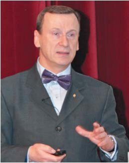
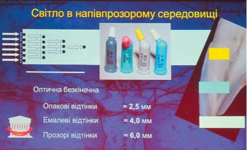
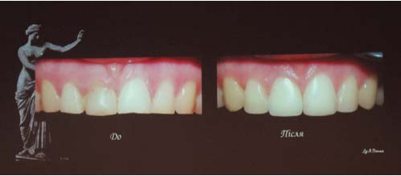
Реставраційну секцію відкрила доповідь Сергія Радлінського (Україна, Полтава), доцента кафедри післядипломної освіти Української медичної стоматологічної академії, «Досягнення кольору реставрованих зубів через біоміметику».
Зовнішній вигляд зубів безпосередньо залежить від прояву світлових ефектів у напівпрозорих середовищах, описаного законом Кубелки-Мунка. Оптична нескінченна — це глибина у напівпрозорому середовищі, на якій світло перестає пропускатися, і тоді колір поверхні цього середовища вже не змінюється. Зазвичай використовують композити трьох опаковостей: дентину, емалі і поверхневої емалі, оптична нескінченна яких складає приблизно 2,5, 4 і 6 мм. Відповідні зубні тканини не бувають такої товщини, тому відтінок композиту ніколи не буде кольором реставрації. Колір реставрації — це завжди креатив того лікаря, який її виконує. І працюючи постійно одним і тим самим матеріалом, можна легше визначити, в якій кількості і як треба складати композит в реставрації.
Оптичні властивості зубів набагато складніші, ніж оптичні властивості матеріалів, якими ми працюємо. Досвід з двоміліметровими дисками з однакових матеріалів у різному співвідношенні, за аналогією з тришаровою реставрацією, при аналізі за допомогою спектрофотометра показує, що укладаючи матеріал у різній товщині, ми отримуємо різні кольори за шкалою Віта. Для того, щоб отримати певний колір реставрації, не треба використовувати багато відтінків матеріалів, потрібні лише чотири відтінки, які імітують відповідні тканини зуба. Укладаючи їх у топографії зуба, що реставрується, ми автоматично отримуємо його колір. Наша концепція біоміметики ґрунтується на класичній тришаровій конструкції, в яку додали четвертий шар — опаковий шар предентину. За допомогою цього компоненту ми можемо коригувати яскравість зуба, а отже імітувати зуби різного віку. Технологія цієї конструкції реставрації перевірена клінічно і дає оптимальні результати відтворення кольору реставрації, що повторює колір природного зуба.
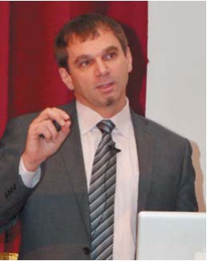
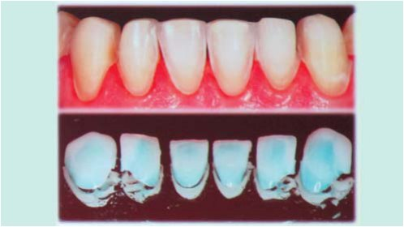
Андрій Пешко (Україна, Київ), офіційний лектор компанії 3М ЕСПЕ, керівник навчального центру «Інститут естетичної стоматології», запропонував увазі колег лекцію на тему «Мікрокосметичні реставрації у протоколі комплексної естетичної реабілітації». Мікрокосметичні реставрації — це легкі штрихи художника, які можуть відразу поліпшити естетику фронтальних зубів. До них можна віднести мікроабразію, косметичне контурування і композитні реставрації в межах емалі. Ключова перевага мікрокосметичних реставрацій — відсутність знеболення, мінімальна інвазивність, локалізація в межах емалі, адаптивна техніка і комбінована техніка із застосуванням відбілювання. Головне правило мікрокосметичних реставрацій — ми додаємо те, що втрачене. Багато пацієнтів намагається зберегти свої зуби, і часто пряма реставрація дозволяє продовжити функціональний цикл зубів. Особливо це показово за невеликого стертя нижніх зубів, коли будь-яке непряме протезування завжди буде більш інвазивним. Повернення втраченого є природним та задовольняє і лікаря, і пацієнта, оскільки творити приємніше, ніж руйнувати.
Ми не стоматологи одного зуба або однієї щелепи, тому повинні бачити і розуміти цілісну картину шляхом клінічного аналізу взаємопов'язаних компонентів. Ми повинні проводити діагностику стану ВНЩС, жувальних м'язів, оклюзії і оцінювати функціонально-естетичні параметри. Це так звана Концепція повної стоматології — усі компоненти зубощелепної системи (зуби, м'які тканини, кісткові структури, м'язи і суглоби) взаємопов'язані і взаємозалежні для ідеального функціонування. Тільки за такого підходу наше лікування буде успішним.
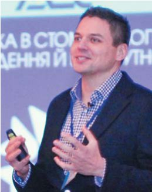
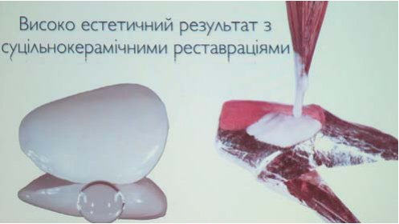
Максим Лєснухін (Україна, Київ), відомий лектор і знайомий читачам численними публікаціями автор, висвітлював тему «Мінімально-інвазивні методики в непрямій реставрації зубів».
Естетика — це досить точна наука, це знання фізики, хімії і математики, які допомагають досягти чудових результатів. Ці знання зробили для нас багато відкриттів. Найдивовижнішим відкриттям стало оптичне злиття між керамікою та емаллю при використанні адгезивної системи. Тепер ми знаємо, що керамічні реставрації мають чудові оптичні властивості. А передбачити математично форму майбутніх реставрацій нескладно.
Одна із запорук успіху — максимальне збереження емалі при препаруванні. Реставрації, зафіксовані в межах емалі, можуть служити понад 10-15 років. Наше уявлення про відновлення змінилося. Непрямі реставрації можуть використовуватися як на вітальних, так і на девітальних зубах. І де раніше ми бачили повну коронку, тепер можна провести препарування зі збереженням проксимальних контактів і виконати вестибулярні і піднебінні вініри. Польовошпатна кераміка має чудові оптичні властивості і дозволяє виконати максимально натуральні і естетичні реставрації. Проте вона має невисоку міцність на стискування, і слід враховувати цей чинник при тотальній реконструкції прикусу. У 2005 році на ринок прийшла керамічна система і-макс (е-мах), яка дала можливість отримувати абсолютно інші результати.
Світ змінився. Те, що раніше здавалося сумнівним, стає нашою щоденною практикою. Нині мінімально-інвазивне протезування — це не лише протезування зубів, це можливість проведення імплантації без розрізів. Розвиток технологій дозволяє повністю спроектувати роботу в комп'ютерних програмах. І ми можемо використати наші знання і технології не лише для протезування зубів, але й за відсутності або дефіциту кісткових структур.
Цитуючи слова Миколи Амосова про те, що лікар зобов'язаний ризикувати і без ризику неможливо досягти результату, Максим Лєснухін продемонстрував роботи, в успішність яких спочатку було складно повірити, але які довели свою спроможність через 12 років функціонування.
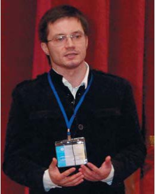
Назарій Михайлюк (Україна, Івано-Франківськ) виступив з доповіддю «Високоестетичний результат суцільнокерамічних реставрацій». Ішлося про суцільнокерамічні реставрації на платиновій фользі. Використання платинової фольги, товщина якої становить 25 мікрон, дозволяє досягти максимальної точності прилягання. Платинова фольга нагрівається рівномірно, і в процесі виплавлювання кераміки, після видалення платинової фольги із цільнокерамичної реставрації, ми отримуємо ідеально гладеньку поверхню. Розсіяння світла відбувається рівномірно, і наші реставрації оптично мають дуже природний вигляд.
Для аналізу усмішки Назарій використовує методику поляризаційних фільтрів, які видаляють усі відблиски на об'єкті фото і створюють враження структури зуба без емалі. Це корисно також при проведенні прямої реставрації і дуже інформативно для зубних техніків, з якими ми співпрацюємо. Власне планування роботи провадиться в концепції комп'ютерного моделювання усмішки, що її запропонував Крістіан Кочман, і з урахуванням концепції морфопсихології (візажизму), яка припускає, що багато людей залежно від власних параметрів морфології і психології має певну форму усмішки і навіть певну анатомію зубів. Лікування складається з естетичного аналізу, планування, мотивації і комунікації з пацієнтом, командної комунікації.
Ми звикли до того, що пакет фотографій для лікування вважається нормою. Але фото фіксує момент статики, а використання відеодокументації дозволяє не лише провести фонетичні проби, але й проаналізувати міміку пацієнта у природних умовах. Усю роботу від препарування до контролю прилягання Назарій проводить, використовуючи мікроскоп, оскільки, на його думку, без оптики кожен професіонал бачить недостатньо і не може забезпечити ідеальний результат.
На завершення лекції Назарій зазначив, що концепція цифрового моделювання усмішки допомагає стоматологові викликати емоції під час комунікації з пацієнтом і мотивувати його до позитивних змін.
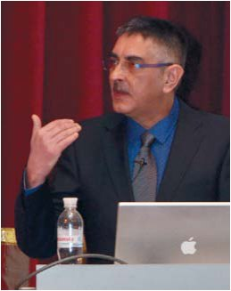
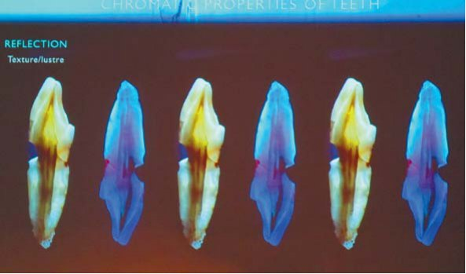
Ірфан Ахмад (Велика Британія, Лондон), автор численних книг з естетики і реставрації, уже відомий українським стоматологам своїми яскравими перформанс-лекціями. Цього разу він виступив відразу з двома лекціями. Перша лекція Ірфана Ахмада — «Хроматичні реставрації: підбір кольору і можливості маскування в зубах з дисколоритами».
Підбір кольору — один з найважливіших моментів при реставрації передніх зубів. Не лише зуби, але й реставрації змініються в кольорі з часом. При підборі кольору ми повинні враховувати зміни, що їх зазнають зуби. За етиологією дисколорити поділяються на три групи: зовнішні, внутрішні та інтерналізовані. Зовнішні дисколорити пов'язані із зовнішнім забарвлюванням, і їх легко можна усунути за допомогою професійного чищення та навчання правильній гігієні порожнини рота. Прямі дисколорити виникають через аліментарний чинник (кава, чай, барвні продукти), наявність шкідливих звичок (куріння). Непрямі забарвлювання частіше пов'язані з дією якихось хімічних агентів (наприклад, хлоргексидин). Внутрішні дисколорити пов'язані з внутрішніми патофізіологічними процесами, і необхідно застосовувати серйознішу дію, наприклад відбілювання, для усунення таких уражень.
До внутрішніх дисколоритів належать вроджені, метаболічні і патофізіологічні. До вроджених зараховують тетрацикліновий синдром, порушення амелогенезу, флюороз, гіпоплазію емалі, кореневу резорбцію і т. д. Постарілі зуби, які зазнали вікових змін, є прикладом метаболічних дисколоритів. Патофізіологічні дисколорити — це зміни внаслідок каріозного процесу, травми і т. д.
Хроматичні особливості зубів характеризуються відбиттям, яке залежить від текстури поверхні і полірування. Другий важливий показник — це трансмісія, або прозорість. Світло, проходячи через емалеві призми, проходить вільно і, відбиваючись від підлеглих тканин дентину, дає йому певну колірну наповненість, поглинання світла дентином визначає його опаковість, дифузія світла визначає його яскравість, або світлоту. Ще один показник — флуоресценція, здатність зубів світитися в ультрафіолетовому світлі — надає зубам живого вигляду. Розсіяння світла дає ефект опалесценції, який локалізується винятково в зоні ріжучого краю.
Найскладніше для виробників кераміки і композиту — відтворити прозорість. Ця властивість композиту забезпечується складом матриці і залежить від самого наповнювача, його розміру, кількості і геометрії. Зазвичай у нашому розпорядженні є композити відтінку дентину (тіла), емалі і різних відтінків зі спеціальними ефектами (опалесценція). Опаковість дозволяє маскувати дисколорацію і блокувати темну підкладку пігментованих тканин, прозорість композиту дозволяє розмити межу реставрації.
Визначення відтінку може проводитися інструментально або візуально. Інструментальний метод дуже ненадійний, оскільки не оцінює параметрів прозорості, опалесценції і флуоресценції. Візуальне визначення більшою мірою залежить від оператора, також великий вплив робить однорідність колірних характеристик зуба, що дозволяє легше визначати колір. Метамеризм — це властивість об'єкта мати різний вигляд під різним освітленням. Враховуючи цю властивість, необхідно оцінювати колір зуба, використовуючи різне освітлення — під лампами освітлення (6500 К) і звичайними вольфрамовими лампами (3000 К). Ще одна властивість — гоніохромізм — матеріали анізотропні і мають різний вигляд під різним кутом зору. Одна із складнощів визначення відтінку зуба — дегідратація. При використанні рабердаму зуби значно змінюють відтінок, тому необхідно визначати відтінок перед його накладанням. Фотографування — це неточне, неідеальне визначення відтінку, але воно дозволяє досить точно визначити структуру, полірування поверхні і скласти хроматичну карту зуба.
Найліпша ідея підбору кольору — це оцінка власне кольору зуба. Як виконати техніку безпосередньої оцінки відтінку? Після очищення, причому зуби мають бути недегідратовані, ми накладаємо композит різної товщини передбачуваного відтінку в природній топографії (дентиновий відтінок в зони максимальної видимості дентину, емалевий — в топографії емалі) безпосередньо на зуб, полімеризуємо, змочуємо для оптичного злиття, усуваємо всі яскраві елементи, які можуть заважати сприйняттю (яскрава помада, одяг і т. д.), і щоб мінімізувати ефекти гоніохромізму та метамеризму, оцінюємо відтінок під різним освітленням і різними кутами зору. Причому оцінка повинна тривати не більше 5 сек, інакше акомодаційні механізми заважатимуть адекватному сприйняттю.
Наступна лекція Ірфана Ахмада, яка відбулася за підтримки фірми Керр, називалася «Одномоментне заповнення і покрокова техніка: пряма реставрація композитом бічних зубів». Глибина полімеризації композиту обмежена 2 мм. Саме це змусило застосовувати пошарову техніку внесення композиту для компенсації С-фактора і запобігання розтріскуванню тканин зуба та мікропідтіканням. Переваги цього підходу: висока естетичність реставрацій з чудовою анатомічною формою; нівеляція С-фактора; за сучасних систем ізоляції — мінімізація ефекту мікропідтікання. Недоліки: необхідність внесення першого адаптаційного шару для зниження полімеризаційного напруження; виникнення мікропор між шарами матеріалу; складна і тривала процедура з високою собівартістю. Альтернатива пошаровій техніці — внесення композиту однією порцією. Переваги одномоментного заповнення: простота виконання, монолітність консистенції, дешевизна, невеликі затрати часу.
Матеріал зі змінною в'язкістю СонікФілл (Керр/Каво) вноситься товщиною 5 мм за допомогою спеціального наконечника. Наконечник приєднується до звичайної системи мультифлекс і має регулятор потужності, від якого залежить швидкість внесення і текучість матеріалу. Спочатку матеріал в компьюлі має досить низьку в'язкість, а після дії звукових хвиль, генерованих наконечником, вона підвищується до 87%.
Переваги цієї техніки: поліпшена адаптація у складних порожнинах; спрощена клінічна процедура; менші витрати часу, що вигідно при лікуванні дітей і літніх людей; можливість не лише пломбування зубів, але й побудови кукси ендодонтично лікованих зубів, фіксації ортодонтичних апаратів, шинування зубів. Недолік цього матеріалу — неможливість моделювання через недостатню пластичність, тобто виконання високоестетичних реставрацій з цим матеріалом неможливе, матеріал обмежений у колірній палітрі, неможливо провести характеризацію поверхні. Проте цей матеріал зробить стоматологічну допомогу доступнішою і швидшою.
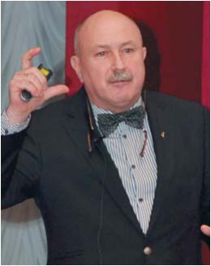
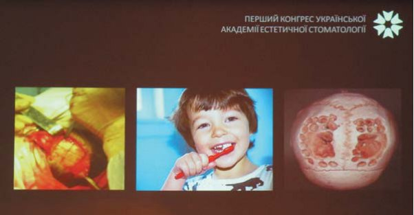
Мирон Угрин (Україна, Львів), доцент кафедри ортопедичної стоматології Львівського державного медичного університету ім. Д. Галицького, запропонував своє філософське бачення теми «Естетичні аспекти імплантології».
На конференції Нобель Біокеа на запитання, що первинне — функція чи естетика, 70% опитаних визнали важливішою функцію, а 30% — естетику. Сьогодні естетичні вимоги зросли. Чи може бути естетичним знімний протез? Очевидно так, але чи може він бути достатньо функціональним? Ми можемо робити доволі функціональні протези на імплантатах, але не завжди — високоестетичні.
Розвиток технологій можна порівняти зі спіраллю, яка йде вниз або вгору. Ми розвиваємо наші навички у функції, можемо виконувати естетичні протези. Але якщо поміняти кут зору, ми рухаємося по колу, адже імплантат — лише протез, а не орган. За класифікацією Міш, запропонованою 1993 року, складно пояснити пацієнтові, чим відрізняються ті чи інші протези на імплантатах. Лектор запропонував свою класифікацію, яка включає функціональне протезування, функціонально-естетичне протезування, естетико-функціональне протезування. Сьогодні виконується тільки 9,2% естетико-функціональних протезів, функціонально-естетичних — 56,3%, функціональних — близько 35,6%.
Методи поліпшення естетики: діагностика і планування методом фотографування, проведення конусно-комп'ютерної томографії, віртуального моделювання, воскового моделювання, прямого композитного моделювання. Технічні способи поліпшення естетики — це удосконалення дизайну імплантатів, виготовлення неметалевих абатментів, використання безметалової кераміки, штучних ясен, застосування цифрових технологій фрезерування (CAD/CAM). До біологічних способів поліпшення естетики належать удосконалення хірургічної техніки, аугментація кістки, пластика м'яких тканин, профілактика втрати м'яких тканин, дистракція, ортодонтичне і пародонтологічне лікування. До біотехнологічних способів досягнення естетики належать генна і тканинна інженерія.
За висловом Стівена Екерта, стоматологія перетворюється на бутик. Але коли ми пропонуємо пацієнтові високоестетичну роботу, то повинні сказати, скільки візитів (а ця цифра іноді доходить до 60) його чекає для досягнення результату. І ніж рятувати зубощелепну систему забиранням кістки з черепної коробки, то може, слід краще чистити зуби? Профілактика могла б позбавити від таких страждань.
У наш час фіксовані часткові протези у фронтальному відділі щелепи можуть забезпечити такий естетичний результат, який складно відрізнити від природних зубів. І протез може об'єднувати в собі естетичні і функціональні стандарти, встановлені звичайними реставраціями з опорою на зуб. Тоді як конструкція для заміщення чотирьох різців верхньої щелепи на імплантатах є однією із найскладніших ситуацій в імплантології.
У прагненні до ідеального підходу ми повинні аналізувати, хто перед нами — дитина, людина активного віку чи літній пацієнт, усі вони хочуть і функції, і естетики, але ставлення до цих понять у них різне. Дітям більшою мірою потрібні функціонально-естетичні протези, людям активного віку — естетично-функціональний і функціонально-естетичний підхід, а в літньому віці пацієнт прагне більшою мірою відновити функцію, естетика для нього має бути прийнятною, і він не ставить для неї високих вимог. Отже, від розсудливості лікарів залежить успіх лікування і задоволеність пацієнтів.
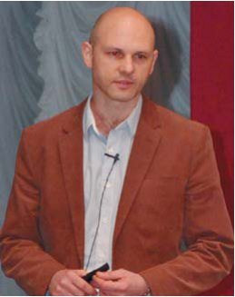
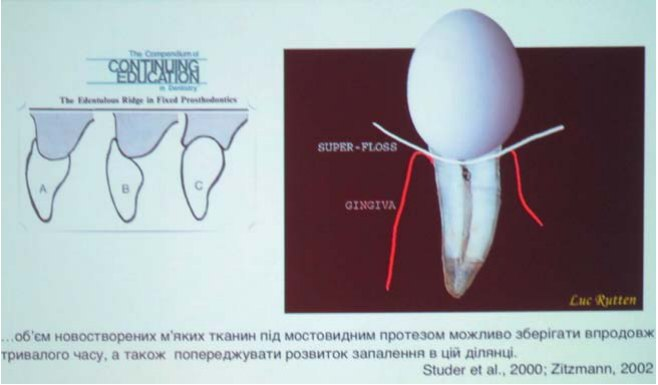
Юрій Обухівський (Україна, Київ) розкрив перед слухачами тему «Боротьба за м'які тканини на хірургічному етапі формування ясен».
Наш прийом складається з кількох фаз: підготовки пацієнта, діагностики, визначення необхідності лікування і власне лікування. На кожному етапі потрібна участь і підтримка усіх фахівців.
Менеджмент м'яких тканин може провадитися у відділі тонкого фенотипу і рецесії, у відділі зубів або імплантатів, у відділі відсутніх зубів, при поглибленні переддвер’я, укороченій вуздечці, при подовженні коронкової частини зуба, відкритті зуба, що не прорізався, і т. д. Спираючись на фундаментальні знання, можна виділити об'єктивні естетичні критерії здоров'я ясен: міжзубні проміжки, зеніт ясенного контуру, баланс ясенної лінії, поверхнева структура, колір ясен, рівень міжзубних контактних пунктів. Необхідно звертати увагу на фізіологічні параметри пародонту, оцінюючи кількісні і якісні співвідношення кісткових структур і м'яких тканин. За тонкого фенотипу ясен і ніжної архітектоніки поверхні високий ризик появи рецесій. З приводу біологічної ширини і міжзубного сосочка суперечки не вщухають. Спираючись на дослідження, ми можемо з упевненістю сказати, що при відстані 5 мм від краю альвеолярної кістки до контактного пункту в 100% випадків ми можемо виростити міжзубний сосочок, але вже при 7 мм це можливо тільки в 27%. Відстань між коренями також відіграє величезну роль для регенерації ясенного сосочка: якщо вона більша або менша 2,4 мм, прогнозувати успішність присутності сосочка неможливо. Біологічна ширина становить від 1,86 до 2 мм. Але біологічна ширина імплантата буде завжди більшою, ніж біологічна ширина зуба. Об'єм новостворених м'яких тканин під мостовидним протезом можна зберігати тривалий час, а також запобігати запаленню в цьому відділі. Формування овоїдного понтика у проміжній частині протеза дозволяє довго зберігати тканини і структури, а також виконувати високоестетичні протези. Методи збільшення висоти клінічної коронки зуба за допомогою ортодонтії із застосуванням апікального або коронального зміщення дозволяють домагатися добрих результатів. Закриття рецесій, відкриття ретенованих зубів — усе це стало можливим уже сьогодні на нашому постійному прийомі. Але філософія боротьби за тканини все одно украй актуальна.
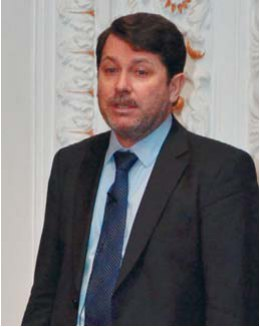
Євген Шелест (Україна, Харків) запропонував увазі слухачів неоднозначний клінічний випадок на тему «Функціональна і естетична реабілітація безнадійних пацієнтів», що викликав бурхливе обговорення в залі.
Чи можна перевірити поняття естетики математично? Чи можемо ми досягти краси стоматологічного лікування, спираючись на поганий фундамент? Чим більше ми вичікуємо зі збереженням зубів, тим більша атрофія очікує нас у майбутньому. Тому ненадійні зуби необхідно видаляти якнайшвидше і реабілітовувати пацієнтів протезами на імплантатах. Звичайно ж, рівень втручань часто викликає опір з боку пацієнта, але діагностичне провізорне планування нерідко мотивує його і демонструє лікареві передбачуваний кінцевий варіант. Часто при масованих видаленнях визначити, який якісний стан кістки нас очікує, неможливо, отже, використання шаблонів не завжди рекомендоване. Тому після установки імплантатів завжди слід провадити повторну діагностику. Очевидно, що за одним випадком неможливо говорити про доказову медицину. Але протези на імплантатах служать іноді понад 20 років, і це заслуговує поваги з нашого боку до такого вибору лікаря.
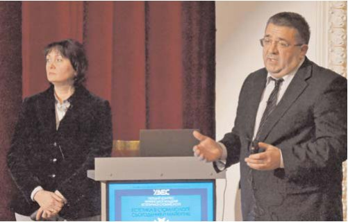
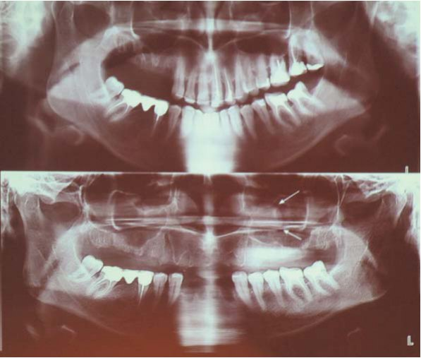
Незвичною для нас і дуже захопливою була форма доповіді — обговорення клінічного випадку, з якою виступили Любов Смаглюк, доктор медичних наук, професор, завідувачка кафедри ортодонтії Української медичної стоматологічної академії, і Валерій Смаглюк, кандидат медичних наук, доцент кафедри післядипломної освіти цієї ж академії. Після ознайомлення з клінічним випадком лекторам і учасникам конгресу, присутнім у залі, було запропоновано не лише обрати і аргументувати варіанти лікування пацієнта, але й вказати на профілактичні заходи для запобігання ускладненням. Підходи різнилися, але це лише підкреслювало необхідність упровадження командного мультидисциплінарного підходу в лікуванні пацієнтів.
Цей клінічний випадок був присвячений вирішенню проблеми ускладнень, що виникли в результаті запущеної дитячої травми у пацієнта з діагнозом посттравматичний анкілоз зуба 11, супрапозиція і резорбція кореня зуба, дефект альвеолярного відростка в зоні цього зуба.
На жаль, можливості збереження цього зуба не було. Після проведення діагностики і аналізу макро- і мікроестетичних параметрів обличчя доповідачі обрали тактику комплексного лікування, що складається з ортодонтичного, хірургічного і протетичного етапів. Ортодонтичний етап здійснювався установкою незнімної брекет-системи і складався з кількох стадій: 1 стадія — нівелювання прикусу (вирівнювання зубних дуг з виправленням ангуляції зубів) — тривала 3 місяці; 2 стадія — вертикального вирівнювання — тривала близько 2 місяців; 3 стадія — стягування зубів, 4 стадія — юстирування і 5 стадія — закріплення результату. Хірургічний етап складався з видалення зуба 11, кісткової пластики альвеолярного відростка, операції імплантації в зоні зуба 11, вестибулопластики і пластики рубцевої короткої вуздечки верхньої губи. На протетичному етапі було виготовлено тимчасову формувальну коронку і після зняття брекет-системи проведено установку незнімного ретейнера на нижню щелепу. Пізніше було встановлено металокерамічну коронку. До кінцевого етапу реабілітації від початку лікування минуло близько двох років. Через 4 роки проведено перепротезування коронкою Каптек для поліпшення естетики і створення сприятливого середовища у просторі ясен. Результат повністю задовольнив лікаря і пацієнта.
Любов Смаглюк чудово підсумувала тему конгресу: «Міждисциплінарна стоматологія будується на дисциплінах, які допомагають виявити проблеми і причинно-наслідкові зв'язки патології, знайти рішення для їх усунення. Це не змішування різних напрямів медицини. Це експертний партнерський підхід як ефективна взаємодія і доповнення один одного в команді фахівців!»
14-15 грудня у Полтаві сталася справді знаменна подія. Народження Української академії естетичної стоматології окрилює і дає надію, що подальший розвиток естетичної стоматології ще попереду, що багато що не сказане і не звідане, і об'єднавшись, ми пройдемо шлях до визнання української стоматологічної школи набагато швидше. Наступний, другий конгрес УАЕС запланований на жовтень 2013 року в Полтаві, а отже — до нових зустрічей!
Ксенія Лазарєва, Ганна Антипович.
www.uaed.org